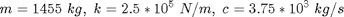
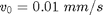
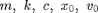
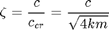
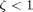
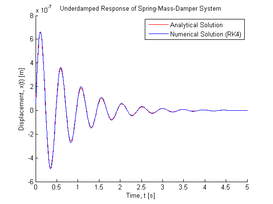
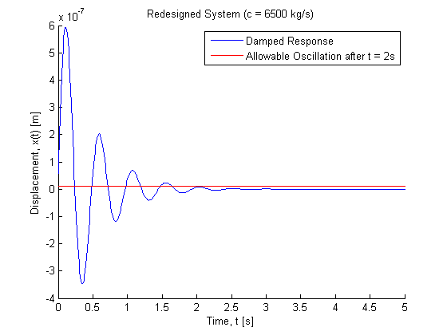
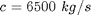

Contents
% Joel Lubinitsky - 02/18/15 % MAE 321 - HW 5.3 clear all close all clc
Problem 3:
Use numerical integration to solve the system of Example 1.7.3 with a different set of physical parameters:  subject to the initial conditions and . Compare your result using numerical integration to just plotting the analytical solution by plotting both on the same graph. Use different symbols to distinguish the two curves. You may use any of the numerical integration methods discussed in class or the learning objectives, but be clear about which you choose and why. Redesign the damper such that the oscillation dies out after . This should be accomplished by creating a Matlab program that varies withing a reasonable range until the desired response is acquired. Present both the final response solution expression and a plot of the response.
Find: System Response, (Numerical/Analytical); Design such that oscillation dies out after
Known

mass = 1455; % kg stiffness = 2.5 * 10 ^ 5; % N/m coefficientDamping = 3.75 * 10 ^ 3; % kg/s xInitial = 0; % m vInitial = 0.01; % mm/s
Conversions
vInitial = vInitial / 1000; % m/s
Calculations

, so system is underdamped.
% Analytical Solution coefficientDampingCritical = sqrt(4 * stiffness * mass); ratioDamping = coefficientDamping / coefficientDampingCritical frequencyNatural = sqrt(stiffness / mass); frequencyNaturalDamped = frequencyNatural * sqrt(1 - ratioDamping ^ 2); stepTime = 0.01; time = [0 : stepTime : 5]; xAnalytical = xUnderdamped(xInitial, vInitial,... ratioDamping, frequencyNatural,... frequencyNaturalDamped, time); % Numerical Solution: Runge-Kutta 4 % Initialize Loop T = 5; dt = 0.001; N = T / dt; vx = zeros(N, 2); vx(1, :) = [vInitial, xInitial]; % Run Loop for n = [1 : N - 1] vx(n + 1, :) = RK4SpringMassDamper(vx(n, 1), vx(n, 2), mass,... coefficientDamping, stiffness, dt); end % Redesign Damper coefficientDampingValues = [4 * 10 ^ 3 : 5 * 10 ^ 2 : 10 * 10 ^ 3]; xResponses = zeros(length(time),... length(coefficientDampingValues)); xResidualAllowed = 1 * 10 ^ -8; for n = [1 : length(coefficientDampingValues)] xResponses(:, n) = xUnderdamped(xInitial, vInitial,... (coefficientDampingValues(n) /... coefficientDampingCritical), frequencyNatural,... frequencyNaturalDamped, time); if max(abs(xResponses(2 / stepTime : end, n))) < xResidualAllowed coefficientDampingSolution = coefficientDampingValues(n) indexSolution = n; break end end
ratioDamping =
0.0983
coefficientDampingSolution =
6500
Plots
Analytical/Numerical Solutions of Response
figure(1) hold on title('Underdamped Response of Spring-Mass-Damper System') xlabel('Time, t [s]') ylabel('Displacement, x(t) [m]') plot(time, xAnalytical, 'color', [1 0 0]) plot(linspace(0, T, N), vx(:, 2), 'color', [0 0 1]) legend('Analytical Solution', 'Numerical Solution (RK4)', 'location', 'northeast') %Redesigned System figure(2) hold on title('Redesigned System (c = 6500 kg/s)') xlabel('Time, t [s]') ylabel('Displacement, x(t) [m]') plot(time, xResponses(:, n), 'color', [0 0 1]) plot(time, xResidualAllowed, 'color', [1 0 0]) legend('Damped Response', 'Allowable Oscillation after t = 2s','location', 'northeast') 
Results
At a sufficiently small time step , the numerical and analytical responses are nearly indistinguishable. The damping coefficient required so that the response dies out after is .